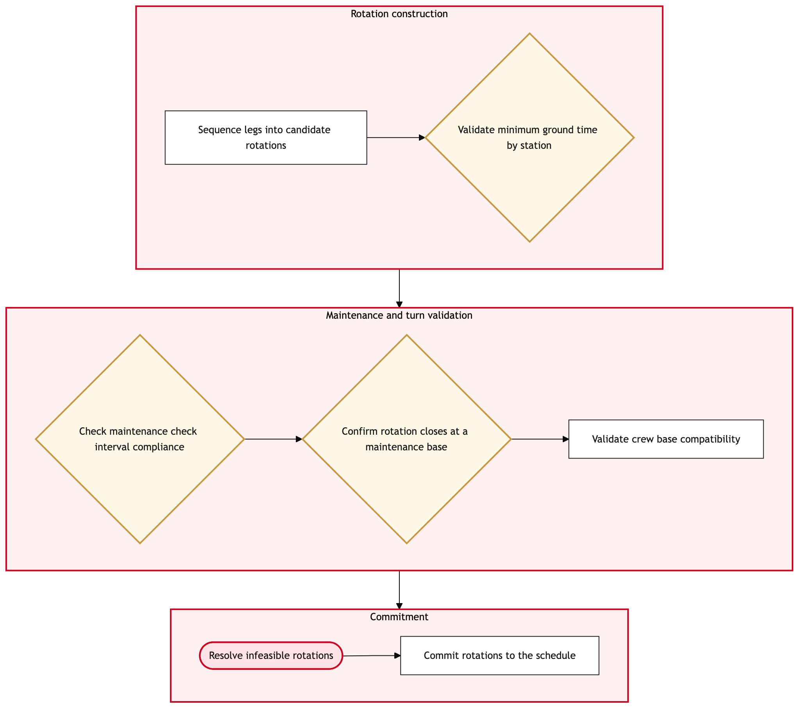

Updated 2026-08-20
Aircraft Rotation and Tail Assignment Build
Process flow
Click to zoom

Process steps
▼
Phase 1 — Data Collection
3 steps
| Step | Activity | Role | System | Input | Output | KPI | Dec | Exc | Pain point |
|---|---|---|---|---|---|---|---|---|---|
| 1.1 | Extract daily operational data from Lufthansa Systems NetLine. | Network Planning Analyst | Lufthansa Systems NetLineB | Operational data, schedule changes, and external events. | Raw data file for processing. | Data extraction accuracy rate: 98% | N | Y | Delayed NetLine system updates can disrupt the entire process. |
| 1.2 | Filter and validate data for consistency with historical patterns. | Network Planning Analyst | Lufthansa Systems NetLineB | Raw data file. | Validated data set. | Data validation pass rate: 95% | Y | N | Manual corrections required for inconsistent data entries. |
| 1.3 | Perform manual corrections and revalidate the data. | Network Planning Analyst | Lufthansa Systems NetLineB | Raw data file with identified inconsistencies. | Revalidated and corrected data set. | Manual correction efficiency: 10 minutes per correction. | N | Y | High volume of corrections can delay the process significantly. |
▼
Phase 2 — Fleet Assignment
2 steps
| Step | Activity | Role | System | Input | Output | KPI | Dec | Exc | Pain point |
|---|---|---|---|---|---|---|---|---|---|
| 2.1 | Initiate fleet assignment in NetLine/Plan using validated data. | Fleet Assignment Specialist | NetLine/PlanB | Validated data set. | Initial fleet assignment draft. | Assignment completion time: 2 hours per cycle. | N | Y | System errors during initial assignment can lead to significant delays. |
| 2.2 | Debug and correct system errors in NetLine/Plan. | Fleet Assignment Specialist | NetLine/PlanB | System error logs. | Corrected initial fleet assignment draft. | Error resolution time: 30 minutes per error. | N | Y | Persistent errors may require manual intervention and escalation. |
▼
Phase 3 — Rotation Build
2 steps
| Step | Activity | Role | System | Input | Output | KPI | Dec | Exc | Pain point |
|---|---|---|---|---|---|---|---|---|---|
| 3.1 | Build aircraft rotation based on fleet assignment. | Rotation Planner | NetLine/PlanB | Initial fleet assignment draft. | Aircraft rotation schedule draft. | Rotation build time: 4 hours per cycle. | Y | N | Complex scheduling constraints can lead to multiple iterations. |
| 3.2 | Adjust rotation schedule based on feedback and constraints. | Rotation Planner | NetLine/PlanB | Aircraft rotation schedule draft and stakeholder feedback. | Adjusted aircraft rotation schedule. | Feedback incorporation time: 1 hour per cycle. | N | Y | Stakeholder disagreements can delay the process further. |
▼
Phase 4 — Tail Assignment
2 steps
| Step | Activity | Role | System | Input | Output | KPI | Dec | Exc | Pain point |
|---|---|---|---|---|---|---|---|---|---|
| 4.1 | Assign specific aircraft tails to the rotation schedule. | Tail Assignment Specialist | NetLine/PlanB | Adjusted aircraft rotation schedule. | Tail-assigned aircraft rotation schedule. | Tail assignment time: 3 hours per cycle. | Y | N | Limited availability of specific aircraft models can cause delays. |
| 4.2 | Identify and request alternative aircraft models if necessary. | Tail Assignment Specialist | NetLine/PlanB | Tail-assigned aircraft rotation schedule with model shortages. | Updated tail-assigned aircraft rotation schedule with alternatives. | Alternative model identification time: 1 hour per shortage. | N | Y | Delays in obtaining alternative models can impact the entire schedule. |
▼
Phase 5 — Validation and Adjustment
2 steps
| Step | Activity | Role | System | Input | Output | KPI | Dec | Exc | Pain point |
|---|---|---|---|---|---|---|---|---|---|
| 5.1 | Validate the final rotation and tail assignment against regulatory requirements. | Regulatory Compliance Analyst | Lufthansa Systems NetLineB | Tail-assigned aircraft rotation schedule. | Validation report. | Validation time: 2 hours per cycle. | Y | N | Complex regulatory constraints can lead to multiple validation iterations. |
| 5.2 | Adjust the schedule to meet regulatory compliance requirements. | Regulatory Compliance Analyst | Lufthansa Systems NetLineB | Tail-assigned aircraft rotation schedule and validation report. | Compliant tail-assigned aircraft rotation schedule. | Compliance adjustment time: 1 hour per non-compliance issue. | N | Y | Persistent compliance issues may require extensive manual adjustments. |
▼
Phase 6 — Implementation Preparation
7 steps
| Step | Activity | Role | System | Input | Output | KPI | Dec | Exc | Pain point |
|---|---|---|---|---|---|---|---|---|---|
| 6.1 | Prepare implementation documentation for the final schedule. | Implementation Specialist | NetLine/PlanB | Compliant tail-assigned aircraft rotation schedule. | Implementation documentation package. | Documentation preparation time: 3 hours per cycle. | Y | N | Complex implementation scenarios can lead to multiple document iterations. |
| 6.2 | Revise documentation based on feedback and changes. | Implementation Specialist | NetLine/PlanB | Implementation documentation package and stakeholder feedback. | Final implementation documentation package. | Feedback incorporation time: 1 hour per cycle. | N | Y | Stakeholder disagreements can delay the process further. |
| 6.3 | Review and approve final implementation documentation. | Network Planning Manager | NetLine/PlanB | Final implementation documentation package. | Approved implementation plan. | Approval time: 2 hours per cycle. | Y | N | Management approval delays can impact the entire schedule. |
| 6.4 | Coordinate with A++ Atlantic Joint Venture for transatlantic schedules. | Transatlantic Coordinator | A++ JVU | Approved implementation plan and transatlantic schedule data. | Coordinated transatlantic schedule. | Coordination time: 1 hour per cycle. | Y | N | Joint venture coordination can lead to multiple back-and-forth communications. |
| 6.5 | Make final adjustments based on joint venture feedback. | Transatlantic Coordinator | A++ JVU | Coordinated transatlantic schedule and stakeholder feedback. | Final coordinated transatlantic schedule. | Feedback incorporation time: 1 hour per cycle. | N | Y | Persistent disagreements can delay the process further. |
| 6.6 | Prepare for implementation by finalizing all supporting documents and plans. | Implementation Specialist | NetLine/PlanB | Final coordinated transatlantic schedule. | Complete implementation plan package. | Finalization time: 2 hours per cycle. | N | Y | Last-minute changes can disrupt the entire process. |
| 6.7 | Review and incorporate final changes to the implementation plan. | Implementation Specialist | NetLine/PlanB | Complete implementation plan package and stakeholder feedback. | Finalized implementation plan package. | Feedback incorporation time: 1 hour per cycle. | N | Y | Persistent disagreements can delay the process further. |
Swim lanes
Network Planning Analyst1.1 1.2 1.3
Fleet Assignment Specialist2.1 2.2
Rotation Planner3.1 3.2
Tail Assignment Specialist4.1 4.2
Regulatory Compliance Analyst5.1 5.2
Implementation Specialist6.1 6.2 6.6 6.7
Network Planning Manager6.3
Transatlantic Coordinator6.4 6.5
Systems touched
Lufthansa Systems NetLineBNetLine/PlanBA++ JVU
Key performance indicators
- Data extraction accuracy rate: 98%
- Assignment completion time: 2 hours per cycle.
- Rotation build time: 4 hours per cycle.
- Tail assignment time: 3 hours per cycle.
- Validation time: 2 hours per cycle.
Risks and control points
- Delayed NetLine system updates disrupting the entire process.
- Persistent errors requiring manual intervention and escalation.
- Stakeholder disagreements delaying the process further.
- Delays in obtaining alternative models impacting the entire schedule.
- Management approval delays impacting the entire schedule.
Air Canada Process Wiki — process and systems reference compiled from public sources
for IT Application Management and User Support pre-sales discovery.
Built 2026-08-21. Every system carries an evidence tier: tier C is an industry pattern and tier U is an open
question, and neither should be asserted as fact about Air Canada without confirmation in discovery.
Not affiliated with or endorsed by Air Canada. Air Canada, Aeroplan and Altitude are trademarks of Air Canada.